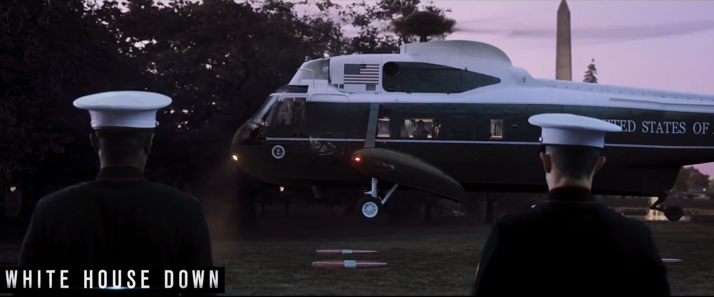
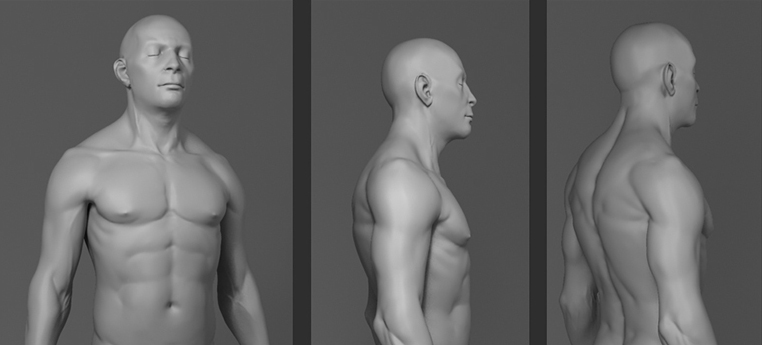
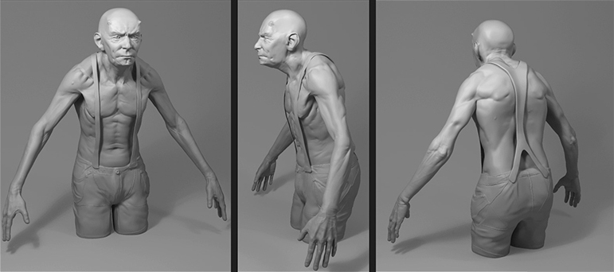

Featured model: temp
Featured model: temp
Featured model: temp
Featured model: temp

Featured model: temp

Featured model: temp
Featured model: temp
3D Generalist / Software Developer
MODELING // SHADING // CHARACTER DESIGN // PIPELINE SCRIPTING // SOFTWARE DEVELOPMENT
My name is Dennis Müller and I am living in the south-west of Germany. I developed an interest in 3D software from a very early stage on in my teenager years. I started learning 3D software (3ds Max, Maya) when I was about 12 years old. Now I have been working in the VFX film industry for 6 years (since 2010). In the last years while I have been studying Computer Science I worked on the movies „White House Down“ and „Independance Day 2“.
3D Artist
I have expertise in modeling, sculpting, texturing, shading and character/creature design. In the past I also have done some lighting and basic compositing (nuke).Software Development
I have experience in developing pipeline tools in maxscript together with the 3D department to help them in their daily tasks with smart tools. Because I am also a 3D artist by myself, I know what kind of tools are useful and how I would like them to behave. Therefore I care a lot about the user experience of my tools. I also developed the smartphone calendar app „Pocal“ for Windows Phone 8 ( written in C# / XAML)Windows Phone Store Programming/scripting languages: C#, Java, Maxscript, Python, C/C++, HTML/CSS, Javascript.
Copyright © 2016 Dennis Müller